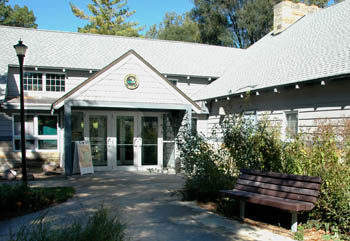

Return to
1-2 Home Page
Community Service

Bay City State Park
- Volunteered to improve gardens
Bay-Arenac ISD Career Center
- Assisted with 'Fourth Grade Day'
Boy Scouting of America Eagle Project
- Beautified & improved picnic tables and a changing booth at the Pinconning Park
Bay County Food Drive
- Helped to load and unload crates of food for the community